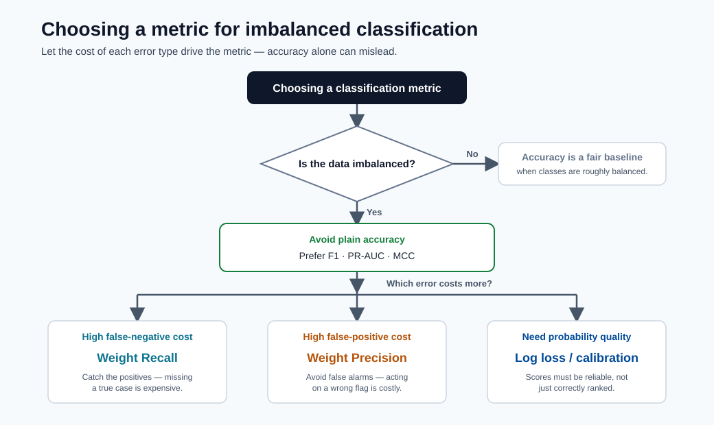

Performance Metrics¶
Choosing the right metric is one of the most important decisions in ML. A model can look excellent on one metric and fail on the real business objective.

Tip - How to use this chart: Pick the metric from the cost of errors, not habit. On imbalanced problems prefer F1, PR-AUC, or MCC over accuracy; weight recall when missed positives are costly, precision when false alarms are costly.
Confusion matrix basics¶
Counts:
- \(TP\): true positives
- \(FP\): false positives
- \(TN\): true negatives
- \(FN\): false negatives
Rates:
Reading the confusion matrix¶
| Actual \ Predicted | Positive | Negative |
|---|---|---|
| Positive | TP | FN |
| Negative | FP | TN |
| Cell | Meaning | Example (fraud model) |
|---|---|---|
| TP | Correctly flagged positive | Real fraud caught |
| FP | False alarm | Legitimate tx blocked |
| TN | Correctly cleared negative | Legit tx passes |
| FN | Missed positive | Fraud slips through |
For a fraud use case, FN is the more dangerous error (missed fraud). This means recall should be weighted heavily in metric choice.
Classification metrics¶
- Precision: \(\frac{TP}{TP+FP}\)
- Recall: \(\frac{TP}{TP+FN}\)
- F1: \(2\cdot\frac{PR}{P+R}\)
- AUC
Additional formulas:
When to use what:
| Scenario | Better metric choices |
|---|---|
| Class imbalance | F1, PR-AUC, MCC, balanced accuracy |
| High false-negative cost | Recall, F2 |
| High false-positive cost | Precision |
| Probability quality | Log loss, calibration metrics |
Regression metrics¶
- MAE
- RMSE
- R2
Formulas:
Interpretation tips:
- MAE is robust and easy to explain in original units.
- RMSE penalizes large errors more strongly.
- \(R^2\) compares against a mean-prediction baseline.
Forecasting metrics (practical)¶
- MAPE: intuitive percentage error, unstable near zero values.
- sMAPE: symmetric variant for better comparability.
- RMSE/MAE: still useful for forecast quality.
Formulas:
Guidance: prefer RMSE/MAE for comparing models on the same scale. Use MAPE/sMAPE only when communicating errors as percentages to business stakeholders.
Pitfalls to avoid¶
- Reporting one metric without confidence intervals.
- Comparing models on different validation splits.
- Ignoring threshold tuning in classification.
- Using accuracy as the primary metric for imbalanced data.
- Evaluating only globally when segment-level performance may diverge significantly.
Threshold optimization (classification)¶
Production classification decisions require threshold policy, not default \(0.5\).
Expected business cost at threshold \(\tau\):
Choose \(\tau\) that minimizes expected cost under business constraints.
Calibration and reliability¶
A classifier can rank well (high AUC) but produce poorly calibrated probabilities.
Calibration checks:
- Reliability curve
- Brier score
- Expected calibration error (ECE)
Use calibration methods (Platt scaling, isotonic regression) when decision systems rely on probability values, not just rank ordering.
SLI/SLO examples for model quality¶
| SLI | SLO example |
|---|---|
| Weekly macro-F1 | >= 0.82 |
| Weekly RMSE | <= 5.0 |
| Calibration error | <= 0.03 |
| Segment disparity ratio | <= 1.25 |
Quick self-check¶
| # | Question | Answer |
|---|---|---|
| 1 | Which metric is safer than accuracy for imbalanced data? | F1 (or PR-AUC, MCC, or balanced accuracy), which stop the majority class from dominating the score. |
| 2 | Why can RMSE be much larger than MAE? | RMSE squares errors, so a few large errors are penalized disproportionately; a big RMSE–MAE gap signals heavy-tailed/outlier errors. |
| 3 | What does a negative \(R^2\) imply? | The model is worse than simply predicting the mean — a clear sign something is broken. |
Deep dive: every concept, explained¶
This section explains why each metric is built the way it is and when it misleads.
The confusion matrix is the source of every classification metric¶
All classification metrics are ratios of the four cells \(TP, FP, TN, FN\). Memorizing the cells is enough to reconstruct any metric:
- Precision \(\tfrac{TP}{TP+FP}\) answers "when the model says positive, how often is it right?" : it is the metric you care about when false positives are expensive (blocking good customers, flagging healthy patients).
- Recall / TPR \(\tfrac{TP}{TP+FN}\) answers "of all real positives, how many did we catch?" : the metric when false negatives are expensive (missed fraud, missed disease).
- F1 \(2\tfrac{PR}{P+R}\) is the harmonic mean of the two. The harmonic mean (not the ordinary average) is used because it stays low unless both precision and recall are high : it refuses to reward a model that sacrifices one for the other.
Why accuracy fails on imbalanced data¶
Accuracy \(\tfrac{TP+TN}{\text{all}}\) weights every example equally, so when 99% of cases are negative, predicting "always negative" scores 99% while catching zero positives. This is why the course repeatedly steers toward F1, PR-AUC, MCC, or balanced accuracy for skewed problems : they all, in different ways, stop the majority class from dominating the score.
ROC-AUC vs PR-AUC, and what "threshold-free" means¶
- AUC is the area under the ROC curve (TPR vs FPR as the threshold sweeps from 1 to 0). It equals the probability that the model ranks a random positive above a random negative : a pure measure of ranking quality, independent of any chosen threshold.
- On heavy imbalance, ROC-AUC can look deceptively high because the huge negative count keeps FPR low. PR-AUC (precision vs recall) focuses on the positive class and is the more honest summary when positives are rare.
- MCC (Matthews correlation coefficient) uses all four cells in a single balanced number from −1 to +1, which is why it is robust even under severe imbalance.
Threshold optimization as cost minimization¶
A model outputs probabilities; the threshold \(\tau\) converts them to decisions. Because false positives and false negatives usually have different costs, the optimal threshold minimizes expected cost \(\mathbb{E}[\text{Cost}(\tau)] = C_{FP}\cdot FP(\tau) + C_{FN}\cdot FN(\tau)\) rather than maximizing accuracy. Concretely: if a missed fraud costs 20 times as much as a false alarm, you lower \(\tau\) to trade many false positives for fewer false negatives. The default 0.5 is almost never optimal in production.
Regression metrics: MAE vs RMSE vs \(R^2\)¶
- MAE averages absolute errors : it is in the target's units and treats all errors linearly, so it is robust to outliers and easy to explain ("off by $5 on average").
- RMSE averages squared errors then square-roots, so large errors are penalized disproportionately. RMSE ≥ MAE always; a large gap between them signals a few big misses (heavy-tailed errors) worth investigating.
- \(R^2 = 1 - \tfrac{SS_{res}}{SS_{tot}}\) compares the model against the trivial "predict the mean" baseline. \(R^2=1\) is perfect, \(0\) means no better than the mean, and negative \(R^2\) means the model is worse than predicting the mean : a clear signal something is broken.
Forecasting metrics and the zero-denominator trap¶
MAPE expresses error as a percentage, which stakeholders find intuitive, but it divides by the actual value, so it explodes or is undefined near zero and over-penalizes under-forecasts. sMAPE symmetrizes the denominator to bound the value and treat over/under-forecasts more evenly. The practical rule from the module: optimize and compare models on RMSE/MAE (stable), and translate to MAPE/sMAPE only for communication.
Calibration: ranking well is not the same as being right¶
A model with high AUC ranks examples correctly but may still output probabilities that do not match reality (e.g. its "90%" predictions are right only 70% of the time). When downstream decisions use the probability value (expected-loss calculations, pricing, triage), you need calibration:
- Reliability curve plots predicted vs observed frequency; the diagonal is perfect.
- Brier score is the mean squared error of the probabilities themselves.
- ECE (expected calibration error) summarizes the average gap between confidence and accuracy.
- Platt scaling (fit a logistic on the scores) and isotonic regression (fit a monotonic step function) are the standard post-hoc fixes.
From metrics to SLIs/SLOs : closing the loop to operations¶
An offline metric becomes a production SLI (service level indicator) when it is measured continuously, and an SLO (objective) when a threshold is attached (e.g. "weekly macro-F1 ≥ 0.82"). This is how model quality joins latency and availability as a monitored, alertable property : the bridge from this module to drift monitoring and deployment SLOs later in the course.
Quick self-check (deep dive)¶
| # | Question | Answer |
|---|---|---|
| 1 | Why is F1 the harmonic mean of precision and recall rather than the ordinary average? | The harmonic mean stays low unless both precision and recall are high, so it refuses to reward a model that sacrifices one for the other. |
| 2 | On a 99%-negative dataset, why can ROC-AUC look great while PR-AUC is poor? | The huge negative count keeps FPR low so ROC-AUC stays high, while PR-AUC focuses on the rare positive class and exposes weak positive-class performance. |
| 3 | What does a negative \(R^2\) tell you about the model? | It performs worse than the trivial mean predictor — a clear signal something is broken. |
| 4 | Why is the default 0.5 threshold almost never optimal in production? | Because false positives and false negatives have different costs; the optimal threshold minimizes expected cost, not accuracy. |
| 5 | A model has high AUC but its "90%" predictions are right only 70% of the time: what is the problem and which fixes apply? | It ranks well but is miscalibrated; fix it with Platt scaling or isotonic regression. |
Multi-class and multi-label metrics in depth¶
Binary classification metrics extend to multi-class settings, but the aggregation strategy — how individual class scores are combined into a single number — dramatically changes what the final score means.
Macro, micro, and weighted averaging¶
Consider a 3-class problem (classes A, B, C) with the following per-class counts and precision/recall:
| Class | Support (\(n_k\)) | Precision (\(P_k\)) | Recall (\(R_k\)) | \(F1_k\) |
|---|---|---|---|---|
| A | 1000 | 0.90 | 0.85 | 0.874 |
| B | 100 | 0.70 | 0.75 | 0.724 |
| C | 20 | 0.50 | 0.60 | 0.545 |
| Total | 1120 | — | — | — |
Macro averaging computes the unweighted mean of per-class scores:
Macro averaging treats every class equally regardless of size. It is appropriate when all classes matter equally, especially when minority classes are important (e.g. rare disease detection). A poor score on the rarest class tanks the macro average.
Micro averaging pools all TP, FP, FN counts across classes before computing the metric:
Micro averaging is dominated by the largest class. In the example above, class A (1000 samples) dominates, so micro-F1 will be close to \(F1_A = 0.874\). Use micro averaging when the overall fraction of correctly classified instances is the primary concern.
Weighted averaging scales each class score by its support:
Weighted averaging accounts for class imbalance while still reflecting per-class performance.
It is the default in sklearn.metrics.f1_score(average='weighted') and the most commonly
reported variant in imbalanced multi-class problems.
Note - Choosing the averaging strategy: Use macro when minority class performance is critical. Use micro when you care about overall instance-level accuracy. Use weighted as a balanced default that naturally reflects the class distribution in your data.
Multi-class confusion matrix:
For \(K\) classes, the confusion matrix is \(K \times K\) where entry \((i, j)\) counts instances of true class \(i\) predicted as class \(j\). The diagonal holds correct predictions:
from sklearn.metrics import confusion_matrix, ConfusionMatrixDisplay
import matplotlib.pyplot as plt
cm = confusion_matrix(y_true, y_pred, labels=["A", "B", "C"])
disp = ConfusionMatrixDisplay(confusion_matrix=cm, display_labels=["A", "B", "C"])
disp.plot(cmap="Blues")
plt.title("Multi-class Confusion Matrix")
plt.show()
Off-diagonal entries reveal which classes are confused with each other — far more diagnostic than any single scalar metric.
Code for all three averaging modes:
from sklearn.metrics import f1_score, precision_score, recall_score, classification_report
print(classification_report(y_true, y_pred, target_names=["A", "B", "C"]))
f1_macro = f1_score(y_true, y_pred, average="macro")
f1_micro = f1_score(y_true, y_pred, average="micro")
f1_weighted = f1_score(y_true, y_pred, average="weighted")
print(f"Macro F1: {f1_macro:.3f}, Micro F1: {f1_micro:.3f}, Weighted F1: {f1_weighted:.3f}")
Cohen's kappa¶
Cohen's kappa measures inter-rater (or classifier vs. ground truth) agreement while correcting for the agreement expected by chance:
where:
- \(p_o\) = observed agreement = fraction of instances correctly classified (accuracy)
- \(p_e\) = expected agreement by chance = \(\sum_k p_{\text{pred},k} \cdot p_{\text{true},k}\)
When to use kappa over accuracy:
When class priors are highly skewed, accuracy is inflated by chance agreement. Kappa removes this inflation. For example, if the positive class is 5% of the data, a naive "always negative" classifier achieves 95% accuracy but \(\kappa \approx 0\) (no better than chance). Kappa is widely used in medical diagnosis and NLP annotation tasks.
Interpretation scale:
| \(\kappa\) range | Interpretation |
|---|---|
| \(< 0\) | Worse than chance |
| \(0.01 – 0.20\) | Slight agreement |
| \(0.21 – 0.40\) | Fair agreement |
| \(0.41 – 0.60\) | Moderate agreement |
| \(0.61 – 0.80\) | Substantial agreement |
| \(0.81 – 1.00\) | Almost perfect agreement |
from sklearn.metrics import cohen_kappa_score
kappa = cohen_kappa_score(y_true, y_pred)
print(f"Cohen's kappa: {kappa:.3f}")
Tip - Kappa in multi-class settings: Cohen's kappa generalizes naturally to multi-class problems. It is also available as a weighted variant (
weights="linear"orweights="quadratic") for ordinal classes, where disagreements on adjacent classes are penalized less than disagreements on distant classes.
Ranking metrics¶
Ranking metrics evaluate ordered lists of predictions, not binary decisions. They are the primary metrics in information retrieval, recommendation systems, and learning-to-rank problems.
NDCG (Normalized Discounted Cumulative Gain)¶
NDCG measures the quality of a ranked list of items, rewarding relevant items that appear earlier in the list. The "discounting" penalizes relevance placed lower in the ranking.
Discounted Cumulative Gain at rank \(k\):
where \(rel_i \in \{0, 1, 2, \ldots\}\) is the relevance grade of the item at rank \(i\). The \(2^{rel_i}\) numerator exponentially amplifies highly relevant items; the \(\log_2(i+1)\) denominator discounts items appearing later.
Ideal DCG (IDCG): The DCG of the perfect ranking (all items sorted by relevance descending).
NDCG normalization:
NDCG ranges from 0 to 1, where 1 means the system returned the ideal ranking. Normalization makes scores comparable across queries with different numbers of relevant items.
Example computation:
Suppose a query has 4 returned items with relevance grades \([3, 2, 3, 0]\):
The ideal ranking would be \([3, 3, 2, 0]\):
from sklearn.metrics import ndcg_score
import numpy as np
# True relevance labels (one query)
y_true = np.array([[3, 2, 3, 0]])
# Predicted scores (higher = more relevant)
y_score = np.array([[0.9, 0.7, 0.8, 0.1]])
ndcg = ndcg_score(y_true, y_score, k=4)
print(f"NDCG@4: {ndcg:.3f}")
When NDCG is used:
- Search engine result ranking (Google, Bing)
- Recommendation system evaluation (top-\(k\) item lists)
- Learning-to-rank models (LambdaMART, RankNet)
- Any scenario where items have graded relevance (not just binary)
Note - Binary vs graded relevance: When relevance is binary (0 or 1), NDCG simplifies and AP (average precision) is often preferred. NDCG's advantage is graded relevance: it can distinguish between a mediocre result and a very good result at the same rank position.
Mean Average Precision (MAP)¶
Average Precision (AP) for a single query summarizes the precision-recall tradeoff across all relevant items in the ranked list:
where \(|R|\) is the number of relevant items and \(P(k)\) is the precision at the rank of the \(k\)-th relevant item.
Mean Average Precision (MAP) averages AP over all queries:
MAP vs AUC:
| Property | MAP | AUC (ROC) |
|---|---|---|
| Ranking-based | Yes (penalizes relevant items ranked low) | Yes (rank of positives vs negatives) |
| Graded relevance | No (binary: relevant / not relevant) | No |
| Positional discount | Yes (earlier positions matter more) | No (all ranks equal) |
| Multi-query | Yes (averaged over queries) | Typically single classifier |
| Common domain | Information retrieval, recommendation | Binary classification |
from sklearn.metrics import average_precision_score
# Binary relevance case
ap = average_precision_score(y_true_binary, y_scores)
print(f"Average Precision: {ap:.3f}")
# MAP over multiple queries
aps = [average_precision_score(y_true_q, y_scores_q)
for y_true_q, y_scores_q in zip(all_y_true, all_y_scores)]
map_score = np.mean(aps)
print(f"MAP: {map_score:.3f}")
Tip - AP vs PR-AUC:
average_precision_scorein sklearn computes the area under the precision-recall curve using a step interpolation, which is slightly different from MAP as defined in IR (which averages precision at each relevant rank). For IR tasks, use MAP. For binary classification tasks, useaverage_precision_score.
Regression metrics deep dive¶
Huber loss¶
Huber loss combines the best properties of MAE and MSE. For errors smaller than a threshold \(\delta\) it behaves like MSE (smooth, differentiable); for larger errors it behaves like MAE (linear, robust to outliers):
The \(\delta\) parameter determines the boundary between quadratic and linear behavior. A smaller \(\delta\) makes the loss more MAE-like (more robust); a larger \(\delta\) makes it more MSE-like (more sensitive to large errors). Common defaults are \(\delta = 1.0\) or tuned as a hyperparameter.
When to prefer Huber over RMSE:
| Scenario | Prefer |
|---|---|
| Clean data, errors roughly Gaussian | RMSE (simple, efficient) |
| Outliers present but meaningful | Huber (robust, still smooth) |
| Outliers are labeling errors | MAE or Huber |
| Need gradient smoothness at zero | Huber or RMSE (MAE has undefined gradient at 0) |
from sklearn.linear_model import HuberRegressor
from sklearn.metrics import mean_absolute_error, mean_squared_error
import numpy as np
model = HuberRegressor(epsilon=1.35) # epsilon = delta in sklearn's parameterization
model.fit(X_train, y_train)
y_pred = model.predict(X_test)
huber_loss = np.mean([
0.5 * e**2 if abs(e) <= 1.35 else 1.35 * (abs(e) - 0.5 * 1.35)
for e in (y_test - y_pred)
])
print(f"Huber loss: {huber_loss:.4f}")
print(f"MAE: {mean_absolute_error(y_test, y_pred):.4f}")
print(f"RMSE: {np.sqrt(mean_squared_error(y_test, y_pred)):.4f}")
MASE (Mean Absolute Scaled Error)¶
MASE (Hyndman & Koehler, 2006) addresses a key weakness of MAPE: it is undefined or explosive when actual values are near zero. MASE scales the MAE by the MAE of a naive in-sample forecast (predict the previous observation), making it unit-free and comparable across time series with different scales:
where the denominator is the mean absolute one-step error of the naive (seasonal random walk) forecast on the training series of length \(T\).
- \(\text{MASE} < 1\): the model beats the naive forecast (good).
- \(\text{MASE} = 1\): equivalent to the naive forecast.
- \(\text{MASE} > 1\): worse than the naive forecast.
Why MASE for cross-series comparison:
MAPE and sMAPE can still produce misleading averages when comparing series with different error distributions. MASE normalizes by each series' own difficulty (how hard it is to forecast relative to a naive baseline), making averages across series meaningful.
def mase(y_true, y_pred, y_train):
"""
y_true, y_pred: test period actuals and predictions
y_train: training period actuals (for naive forecast denominator)
"""
mae = np.mean(np.abs(y_true - y_pred))
naive_mae = np.mean(np.abs(np.diff(y_train))) # one-step naive errors
return mae / naive_mae
score = mase(y_test, y_pred, y_train)
print(f"MASE: {score:.3f} ({'better' if score < 1 else 'worse'} than naive)")
Quantile metrics and prediction intervals¶
Standard regression metrics evaluate point predictions. Quantile regression and quantile loss evaluate distributional predictions — estimates of specific percentiles of the target distribution rather than its expected value.
Pinball loss (quantile loss):
For the median (\(q = 0.5\)), pinball loss reduces to \(\frac{1}{2}\)MAE. For \(q = 0.9\), the loss asymmetrically penalizes under-predictions (positive errors) 9 times more than over-predictions, causing the model to learn the 90th percentile.
Why quantile regression produces calibrated intervals:
A prediction interval \([\hat{y}_{0.05}, \hat{y}_{0.95}]\) formed by the 5th and 95th percentile models is calibrated if it contains 90% of actual values. Quantile regression achieves this directly by optimizing the pinball loss for each quantile, without assuming a parametric error distribution.
from sklearn.ensemble import GradientBoostingRegressor
import numpy as np
# Train models for lower, median, and upper quantiles
quantiles = [0.05, 0.50, 0.95]
models = {}
for q in quantiles:
model = GradientBoostingRegressor(
loss="quantile", alpha=q,
n_estimators=200, max_depth=4
)
model.fit(X_train, y_train)
models[q] = model
lower = models[0.05].predict(X_test)
median = models[0.50].predict(X_test)
upper = models[0.95].predict(X_test)
# Empirical coverage: should be ~90%
coverage = np.mean((y_test >= lower) & (y_test <= upper))
print(f"90% interval empirical coverage: {coverage:.1%}")
# Pinball loss for the 0.9 quantile
def pinball_loss(y, y_hat, q):
errors = y - y_hat
return np.mean(np.where(errors >= 0, q * errors, (q - 1) * errors))
print(f"Pinball loss (q=0.9): {pinball_loss(y_test, upper, 0.9):.4f}")
Applications in forecasting confidence:
- Energy demand forecasting: intervals guide reserve capacity planning.
- Supply chain: upper quantile of demand drives safety stock calculation.
- Financial risk: Value at Risk (VaR) is formally a quantile of the loss distribution.
- Azure ML AutoML for forecasting: reports quantile predictions when
forecast_quantilesis specified in the forecasting configuration.
Note - Interval calibration check: Always verify empirical coverage. If a 90% interval covers only 70% of test points, the model is overconfident (intervals too narrow). If it covers 99%, the model is underconfident (intervals too wide and less useful). Calibrated intervals are the goal.
Business metric alignment¶
Choosing the right ML metric is necessary but not sufficient. The ultimate measure of a model's value is its impact on the business objective. This section bridges the gap from statistical metrics to business decisions.
Lift and gain curves¶
Lift curves answer: "compared to randomly selecting customers/records, how much better does the model do?" They are foundational tools in direct marketing, credit scoring, and fraud detection, where the model is used to prioritize a fixed-size intervention budget.
Cumulative gain at decile \(d\): the fraction of all positives captured by targeting the top \(d \times 10\%\) of records scored by the model.
Lift at decile \(d\): cumulative gain divided by what random selection would achieve:
A lift of 3.0 at decile 1 means the top 10% of model scores contains 3\(\times\) the positives of a random 10% sample.
Worked example — marketing campaign:
Suppose 10,000 customers, 500 buyers (5% base rate). The model ranks all customers.
| Decile | Customers | Buyers in decile | Cumul. gain | Lift |
|---|---|---|---|---|
| 1 | 1,000 | 200 | 40% | 4.0 |
| 2 | 1,000 | 100 | 60% | 3.0 |
| 3 | 1,000 | 75 | 75% | 2.5 |
| 5 | 1,000 | 25 | 90% | 1.8 |
| 10 | 1,000 | 10 | 100% | 1.0 |
If the campaign budget allows contacting only 2,000 customers (top 2 deciles), targeting with the model captures 60% of all buyers vs. 20% with random selection — a 3× lift on ROI.
import numpy as np
import pandas as pd
def lift_table(y_true, y_scores, n_deciles=10):
df = pd.DataFrame({"y": y_true, "score": y_scores})
df = df.sort_values("score", ascending=False).reset_index(drop=True)
df["decile"] = pd.qcut(df.index, n_deciles, labels=False) + 1
total_pos = df["y"].sum()
rows = []
cumul = 0
for d in range(1, n_deciles + 1):
group = df[df["decile"] == d]
pos = group["y"].sum()
cumul += pos
gain = cumul / total_pos
lift = gain / (d / n_deciles)
rows.append({"decile": d, "positives": int(pos), "cumul_gain": gain, "lift": lift})
return pd.DataFrame(rows)
print(lift_table(y_test_binary, y_pred_proba).to_string(index=False))
Expected value framework¶
The expected value (EV) framework converts a confusion matrix into business value by attaching dollar amounts (or any utility) to each cell:
where \(v_{TP}\) is the value of a true positive (fraud caught), \(c_{FP}\) is the cost of a false positive (legitimate customer inconvenienced), \(c_{FN}\) is the cost of a missed positive (fraud loss), and \(v_{TN}\) is typically zero or negligible.
Optimizing threshold for EV, not accuracy:
For a fixed model, the threshold \(\tau\) determines the TP/FP/FN/TN counts. The optimal threshold maximizes EV:
Full worked example — fraud detection:
Assumptions: - 10,000 transactions per day, 1% fraud rate (100 fraudulent) - \(v_{TP} = \$200\) (average fraud loss prevented per caught fraud) - \(c_{FP} = \$10\) (cost of blocking a legitimate transaction — customer friction) - \(c_{FN} = \$200\) (fraud loss for a missed fraud) - \(v_{TN} \approx 0\)
import numpy as np
def expected_value(y_true, y_scores, threshold, v_tp, c_fp, c_fn, v_tn=0):
y_pred = (y_scores >= threshold).astype(int)
tp = np.sum((y_pred == 1) & (y_true == 1))
fp = np.sum((y_pred == 1) & (y_true == 0))
fn = np.sum((y_pred == 0) & (y_true == 1))
tn = np.sum((y_pred == 0) & (y_true == 0))
return tp * v_tp - fp * c_fp - fn * c_fn + tn * v_tn
# Sweep thresholds and find the EV-maximizing one
thresholds = np.linspace(0.01, 0.99, 99)
evs = [expected_value(y_test, y_scores, t, v_tp=200, c_fp=10, c_fn=200)
for t in thresholds]
best_thresh = thresholds[np.argmax(evs)]
best_ev = max(evs)
print(f"Optimal threshold: {best_thresh:.2f}, Daily EV: ${best_ev:,.0f}")
# Compare with default threshold 0.5
default_ev = expected_value(y_test, y_scores, 0.5, v_tp=200, c_fp=10, c_fn=200)
print(f"Default (0.5) threshold EV: ${default_ev:,.0f}")
print(f"EV gain from optimal threshold: ${best_ev - default_ev:,.0f} per day")
Note - Scale before comparing: EV depends on the scale of your data. If the test set is 1,000 transactions and production volume is 100,000, scale the EV by 100 to get the daily production impact. The threshold is scale-independent; the absolute EV is not.
Tip - EV framework in Azure ML AutoML: AutoML's
primary_metricoptimizes a statistical metric. After AutoML selects the best model, apply the EV framework post-hoc to tune the threshold. This two-step approach separates model selection (statistical quality) from threshold setting (business value optimization).
Statistical significance of metric differences¶
Two models score 0.923 and 0.918 AUC on the same test set. Is the difference real or noise? Statistical significance tests answer this question before promoting a new model to production.
Bootstrap confidence interval for AUC:
The bootstrap resamples the test set with replacement many times, computing AUC on each resample. The 2.5th and 97.5th percentiles of the resampled AUC distribution form a 95% CI:
import numpy as np
from sklearn.metrics import roc_auc_score
def bootstrap_auc_ci(y_true, y_scores, n_bootstrap=2000, ci=0.95, seed=42):
rng = np.random.default_rng(seed)
n = len(y_true)
auc_samples = []
for _ in range(n_bootstrap):
idx = rng.integers(0, n, size=n)
if len(np.unique(y_true[idx])) < 2:
continue # skip degenerate samples
auc_samples.append(roc_auc_score(y_true[idx], y_scores[idx]))
alpha = (1 - ci) / 2
return np.percentile(auc_samples, [100 * alpha, 100 * (1 - alpha)])
ci_model_a = bootstrap_auc_ci(y_true, scores_model_a)
ci_model_b = bootstrap_auc_ci(y_true, scores_model_b)
print(f"Model A AUC 95% CI: [{ci_model_a[0]:.4f}, {ci_model_a[1]:.4f}]")
print(f"Model B AUC 95% CI: [{ci_model_b[0]:.4f}, {ci_model_b[1]:.4f}]")
If the CIs overlap substantially, the difference is not statistically significant.
Permutation test for metric difference:
The permutation test asks: "if both models were identical, how often would we see a difference this large by chance?"
def permutation_test_auc(y_true, scores_a, scores_b, n_permutations=10000, seed=42):
rng = np.random.default_rng(seed)
observed_diff = roc_auc_score(y_true, scores_a) - roc_auc_score(y_true, scores_b)
null_diffs = []
for _ in range(n_permutations):
# Randomly swap scores between models for each instance
swap = rng.random(len(y_true)) > 0.5
perm_a = np.where(swap, scores_b, scores_a)
perm_b = np.where(swap, scores_a, scores_b)
null_diffs.append(roc_auc_score(y_true, perm_a) - roc_auc_score(y_true, perm_b))
p_value = np.mean(np.abs(null_diffs) >= np.abs(observed_diff))
return p_value, observed_diff
p_val, diff = permutation_test_auc(y_true, scores_model_a, scores_model_b)
print(f"AUC difference: {diff:+.4f}, p-value: {p_val:.4f}")
print(f"Significant at 0.05: {'Yes' if p_val < 0.05 else 'No'}")
Bonferroni correction for multiple tests:
If you compare \(m\) pairs of models or \(m\) evaluation segments, the probability of at least one false positive at significance level \(\alpha\) is approximately \(m\alpha\). The Bonferroni correction adjusts the per-test threshold:
For \(m = 10\) comparisons at \(\alpha = 0.05\): use \(\alpha_{\text{adjusted}} = 0.005\).
# Bonferroni-corrected significance test for 5 segment comparisons
m = 5
alpha = 0.05
alpha_bonferroni = alpha / m
print(f"Use p < {alpha_bonferroni:.3f} for each individual segment test")
Note - Practical vs statistical significance: A statistically significant difference (\(p < 0.05\)) does not imply the difference is large enough to matter. An AUC improvement of 0.001 may be statistically significant on a large test set but economically negligible. Always report both the p-value and the effect size (actual metric difference), and assess whether the business impact of the improvement justifies the cost of retraining and redeploying.
When to trust an improvement:
| Condition | Action |
|---|---|
| CI of model A entirely above CI of model B | Proceed with confidence |
| CIs overlap slightly, p < 0.05 | Probably real; sanity-check on a second held-out set |
| CIs overlap substantially, p > 0.05 | Treat models as equivalent; prefer simpler/cheaper |
| Improvement on overall metric but degradation on key segment | Investigate segment; do not promote blindly |
Metric implementation reference¶
This section provides copy-paste-ready code for every major metric discussed in this module,
using sklearn.metrics. All examples assume y_true are ground truth labels and y_scores
are continuous scores (for threshold-dependent metrics, y_pred are binary predictions).
import numpy as np
from sklearn.metrics import (
# Classification
accuracy_score, balanced_accuracy_score,
precision_score, recall_score, f1_score,
roc_auc_score, average_precision_score,
log_loss, brier_score_loss,
matthews_corrcoef, cohen_kappa_score,
confusion_matrix, classification_report,
# Regression
mean_absolute_error, mean_squared_error,
mean_absolute_percentage_error, r2_score,
# Ranking
ndcg_score,
)
# ── Binary classification ──────────────────────────────────────────────────────
print("=== Binary Classification ===")
print(f"Accuracy: {accuracy_score(y_true, y_pred):.4f}")
print(f"Balanced accuracy: {balanced_accuracy_score(y_true, y_pred):.4f}")
print(f"Precision: {precision_score(y_true, y_pred):.4f}")
print(f"Recall: {recall_score(y_true, y_pred):.4f}")
print(f"F1: {f1_score(y_true, y_pred):.4f}")
print(f"F2 (beta=2): {f1_score(y_true, y_pred, beta=2):.4f}")
print(f"ROC-AUC: {roc_auc_score(y_true, y_scores):.4f}")
print(f"PR-AUC (Avg Prec): {average_precision_score(y_true, y_scores):.4f}")
print(f"Log loss: {log_loss(y_true, y_scores):.4f}")
print(f"Brier score: {brier_score_loss(y_true, y_scores):.4f}")
print(f"MCC: {matthews_corrcoef(y_true, y_pred):.4f}")
print(f"Cohen's kappa: {cohen_kappa_score(y_true, y_pred):.4f}")
# ── Multi-class classification ──────────────────────────────────────────────────
print("\n=== Multi-class Classification ===")
print(classification_report(y_true_mc, y_pred_mc))
print(f"Macro F1: {f1_score(y_true_mc, y_pred_mc, average='macro'):.4f}")
print(f"Micro F1: {f1_score(y_true_mc, y_pred_mc, average='micro'):.4f}")
print(f"Weighted F1: {f1_score(y_true_mc, y_pred_mc, average='weighted'):.4f}")
print(f"Cohen's kappa: {cohen_kappa_score(y_true_mc, y_pred_mc):.4f}")
# ── Regression ─────────────────────────────────────────────────────────────────
print("\n=== Regression ===")
print(f"MAE: {mean_absolute_error(y_true_r, y_pred_r):.4f}")
print(f"RMSE: {np.sqrt(mean_squared_error(y_true_r, y_pred_r)):.4f}")
print(f"MAPE: {mean_absolute_percentage_error(y_true_r, y_pred_r):.4f}")
print(f"R²: {r2_score(y_true_r, y_pred_r):.4f}")
# Huber loss (manual, delta=1.0)
delta = 1.0
errors = y_true_r - y_pred_r
huber = np.mean(np.where(np.abs(errors) <= delta,
0.5 * errors**2,
delta * (np.abs(errors) - 0.5 * delta)))
print(f"Huber (δ=1.0): {huber:.4f}")
# ── Ranking ────────────────────────────────────────────────────────────────────
print("\n=== Ranking ===")
# y_relevance shape: (n_queries, n_items); y_score shape: (n_queries, n_items)
print(f"NDCG@10: {ndcg_score(y_relevance, y_score_matrix, k=10):.4f}")
Common mistakes to avoid:
| Mistake | Impact | Fix |
|---|---|---|
Using accuracy_score on imbalanced data |
Misleading high score | Use F1, MCC, or balanced accuracy |
| Comparing MAPE across series with different scales | Invalid comparison | Use MASE or scale-normalized MAE |
| Computing AUC on the training set | Optimistically biased | Always use held-out or CV validation set |
Using default f1_score(average='binary') for multi-class |
Error or wrong metric | Specify average='macro'/'micro'/'weighted' |
| Not checking empirical coverage of prediction intervals | Overconfident intervals | Validate coverage on held-out test set |
| Reporting a metric without specifying the averaging method | Ambiguous results | Always state macro/micro/weighted |